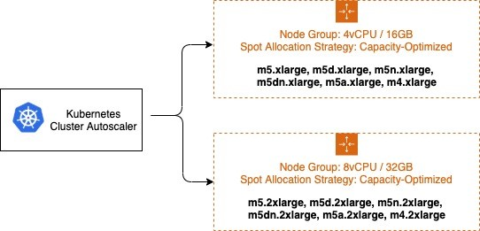

Kubernetes 集群自动缩放器¶
概述¶
Kubernetes 集群自动缩放器是一个流行的集群自动缩放解决方案,由 SIG Autoscaling 维护。它负责确保您的集群有足够的节点来调度您的 pod,而不浪费资源。它会监视无法调度的 pod 和利用不足的节点。然后它模拟添加或删除节点,然后将更改应用于您的集群。集群自动缩放器中的 AWS 云提供商实现控制您的 EC2 Auto Scaling 组的 .DesiredReplicas 字段。

本指南将提供配置集群自动缩放器的心智模型,并选择最佳的权衡方案来满足您组织的要求。虽然没有单一的最佳配置,但有一组配置选项可以让您权衡性能、可扩展性、成本和可用性。此外,本指南还将提供优化 AWS 配置的技巧和最佳实践。
词汇表¶
在本文档中,将频繁使用以下术语。这些术语可以有广泛的含义,但在本文档中仅限于以下定义。
可扩展性指集群自动缩放器在 Kubernetes 集群中的 pod 和节点数量增加时的性能。随着可扩展性限制的达到,集群自动缩放器的性能和功能会下降。当集群自动缩放器超过其可扩展性限制时,它可能无法再在集群中添加或删除节点。
性能指集群自动缩放器做出和执行缩放决策的速度。一个完美的集群自动缩放器会立即做出决定并触发缩放操作,以响应未调度的 pod 等刺激。
可用性意味着 pod 可以快速调度并且不会中断。这包括新创建的 pod 需要调度以及缩小节点时终止调度到该节点的任何剩余 pod。
成本由扩展和收缩事件背后的决策决定。如果现有节点利用率低或添加了太大的新节点,资源就会浪费。根据使用情况,由于过于激进的缩小决策而过早终止 pod 也可能产生成本。
节点组是 Kubernetes 中节点组的抽象概念。它不是真正的 Kubernetes 资源,而是存在于集群自动缩放器、集群 API 和其他组件中的一种抽象。同一节点组内的节点共享标签和污点等属性,但可能由多个可用性区域或实例类型组成。
EC2 Auto Scaling 组可用作 EC2 上节点组的实现。EC2 Auto Scaling 组配置为启动实例,这些实例会自动加入其 Kubernetes 集群并将标签和污点应用于其在 Kubernetes API 中对应的节点资源。
EC2 托管节点组是 EC2 上节点组的另一种实现。它抽象了手动配置 EC2 自动缩放组的复杂性,并提供了诸如节点版本升级和优雅节点终止等附加管理功能。
运行集群自动缩放器¶
集群自动缩放器通常作为部署安装在您的集群中。它使用领导者选举来确保高可用性,但工作由单个副本完成。它不能水平扩展。对于基本设置,默认情况下应该可以使用提供的安装说明正常工作,但需要注意一些事项。
确保:
对 IAM 角色采用最小权限访问¶
当使用自动发现时,我们强烈建议您通过将 autoscaling:SetDesiredCapacity 和 autoscaling:TerminateInstanceInAutoScalingGroup 操作限制到当前集群的 Auto Scaling 组来采用最小权限访问。
这将防止在一个集群中运行的集群自动缩放器修改另一个集群中的节点组,即使 --node-group-auto-discovery 参数没有使用标签(例如 k8s.io/cluster-autoscaler/<cluster-name>)缩小到集群的节点组。
{
"Version": "2012-10-17",
"Statement": [
{
"Effect": "Allow",
"Action": [
"autoscaling:SetDesiredCapacity",
"autoscaling:TerminateInstanceInAutoScalingGroup"
],
"Resource": "*",
"Condition": {
"StringEquals": {
"aws:ResourceTag/k8s.io/cluster-autoscaler/enabled": "true",
"aws:ResourceTag/k8s.io/cluster-autoscaler/<my-cluster>": "owned"
}
}
},
{
"Effect": "Allow",
"Action": [
"autoscaling:DescribeAutoScalingGroups",
"autoscaling:DescribeAutoScalingInstances",
"autoscaling:DescribeLaunchConfigurations",
"autoscaling:DescribeScalingActivities",
"autoscaling:DescribeTags",
"ec2:DescribeImages",
"ec2:DescribeInstanceTypes",
"ec2:DescribeLaunchTemplateVersions",
"ec2:GetInstanceTypesFromInstanceRequirements",
"eks:DescribeNodegroup"
],
"Resource": "*"
}
]
}
配置您的节点组¶
有效的自动缩放从正确配置一组节点组开始。为您的集群选择正确的节点组集合是最大化可用性和降低成本的关键。AWS 使用 EC2 Auto Scaling 组实现节点组,这对于大量用例都很灵活。但是,集群自动缩放器对您的节点组做出一些假设。保持您的 EC2 Auto Scaling 组配置与这些假设一致将最大限度地减少不需要的行为。
确保:
- 同一节点组中的每个节点都具有相同的调度属性,如标签、污点和资源。
- 对于 MixedInstancePolicies,实例类型必须具有相同的 CPU、内存和 GPU 形状。
- 策略中指定的第一种实例类型将用于模拟调度。
- 如果您的策略有更多资源的其他实例类型,扩展后可能会浪费资源。
- 如果较小的实例类型,由于容量不足,您的 pod 可能无法在新实例上调度。
- 节点数量较多的节点组优于节点数量较少的多个节点组。这对可扩展性影响最大。
- 尽可能使用 EC2 功能,而不是使用两种系统都支持的功能(例如区域、MixedInstancePolicy)
注意:我们建议使用 EKS 托管节点组。托管节点组提供强大的管理功能,包括集群自动缩放器的功能,如自动 EC2 Auto Scaling 组发现和优雅节点终止。
优化性能和可扩展性¶
了解自动缩放算法的运行时复杂度将有助于您调整集群自动缩放器,使其在拥有超过 1,000 个节点的大型集群中继续平稳运行。
调整集群自动缩放器可扩展性的主要参数是提供给进程的资源、算法的扫描间隔以及集群中的节点组数量。还有其他涉及算法真实运行复杂度的因素,如调度插件复杂度和 pod 数量。这些被视为不可配置参数,因为它们是集群工作负载的自然属性,无法轻易调整。
集群自动缩放器将整个集群的状态加载到内存中,包括 Pod、节点和节点组。在每个扫描间隔中,算法识别无法调度的 pod,并为每个节点组模拟调度。调整这些因素会带来不同的权衡,应该仔细考虑您的用例。
垂直自动缩放集群自动缩放器¶
扩展集群自动缩放器以适应更大集群的最简单方法是增加其部署的资源请求。对于大型集群,应该同时增加内存和 CPU,尽管这会因集群大小而有很大差异。自动缩放算法将所有 pod 和节点存储在内存中,这可能导致内存占用超过 1 GB。通常手动增加资源。如果发现需要不断调整资源会造成运营负担,可以考虑使用 Addon Resizer 或 Vertical Pod Autoscaler。
减少节点组数量¶
最小化节点组数量是确保集群自动缩放器在大型集群上继续良好运行的一种方法。对于某些组织来说,这可能很具有挑战性,因为他们会根据团队或应用程序来构建节点组。虽然 Kubernetes API 完全支持这种做法,但这被视为集群自动缩放器的反模式,会对可扩展性产生影响。使用多个节点组有很多原因(例如 Spot 实例或 GPU),但在许多情况下,有替代设计可以实现相同的效果,同时使用较少的组。
确保:
- 使用命名空间而不是节点组来隔离 pod。
- 在低信任的多租户集群中可能无法做到这一点。
- 正确设置 Pod ResourceRequests 和 ResourceLimits 以避免资源争用。
- 较大的实例类型将导致更优化的装箱和减少系统 pod 开销。
- 仅将 NodeTaints 或 NodeSelectors 用作例外,而不是规则。
- 区域资源定义为具有多个可用性区域的单个 EC2 Auto Scaling 组。
减少扫描间隔¶
较低的扫描间隔(例如 10 秒)将确保集群自动缩放器在 pod 无法调度时尽快做出响应。但是,每次扫描都会导致对 Kubernetes API 和 EC2 Auto Scaling 组或 EKS 托管节点组 API 的大量 API 调用。这些 API 调用可能会导致速率限制或甚至 Kubernetes 控制平面的服务不可用。
默认扫描间隔为 10 秒,但在 AWS 上,启动节点需要明显更长的时间。这意味着可以增加间隔,而不会显著增加整体扩展时间。例如,如果启动节点需要 2 分钟,将间隔更改为 1 分钟将以 6 倍减少 API 调用为代价,缩放速度降低 38%。
跨节点组分片¶
集群自动缩放器可以配置为仅对特定的节点组进行操作。使用此功能,可以部署多个集群自动缩放器实例,每个实例配置为对不同的节点组进行操作。这种策略使您能够使用任意数量的节点组,以成本换取可扩展性。我们只建议在提高性能的最后手段中使用这种方法。
集群自动缩放器最初并未设计用于此配置,因此会产生一些副作用。由于分片之间不会通信,多个自动缩放器可能会尝试调度同一个无法调度的 pod。这可能会导致不必要地扩展多个节点组。这些额外的节点将在 scale-down-delay 后缩小。
metadata:
name: cluster-autoscaler
namespace: cluster-autoscaler-1
...
--nodes=1:10:k8s-worker-asg-1
--nodes=1:10:k8s-worker-asg-2
---
metadata:
name: cluster-autoscaler
namespace: cluster-autoscaler-2
...
--nodes=1:10:k8s-worker-asg-3
--nodes=1:10:k8s-worker-asg-4
确保:
- 每个分片都配置为指向一组唯一的 EC2 Auto Scaling 组
- 每个分片都部署到一个单独的命名空间,以避免领导者选举冲突
优化成本和可用性¶
Spot 实例¶
您可以在节点组中使用 Spot 实例,并节省高达 90% 的按需价格,代价是 Spot 实例可能随时被中断,当 EC2 需要回收容量时。当您的 EC2 Auto Scaling 组无法由于缺乏可用容量而扩展时,就会发生容量不足错误。通过选择多个实例系列来最大化多样性可以增加实现所需规模的机会,并减少 Spot 实例中断对集群可用性的影响。带有 Spot 实例的混合实例策略是增加多样性而不增加节点组数量的好方法。请记住,如果您需要有保证的资源,请使用按需实例而不是 Spot 实例。
在配置混合实例策略时,所有实例类型的资源容量必须相似。自动缩放器的调度模拟器使用 MixedInstancePolicy 中指定的第一个 InstanceType。如果后续的实例类型更大,扩展后可能会浪费资源。如果更小,您的 pod 可能无法在新实例上调度,因为容量不足。例如,M4、M5、M5a 和 M5n 实例的 CPU 和内存都非常相似,是 MixedInstancePolicy 的良好候选。EC2 实例选择器工具可以帮助您识别相似的实例类型。

建议将按需和 Spot 容量隔离到单独的 EC2 Auto Scaling 组中。这比使用基础容量策略更可取,因为调度属性从根本上不同。由于 Spot 实例可能随时被中断(当 EC2 需要回收容量时),用户通常会污染其可抢占节点,要求对抢占行为进行明确的 pod 容忍。这些污点会导致节点的调度属性不同,因此它们应该被分离到多个 EC2 Auto Scaling 组中。
集群自动缩放器有一个称为扩展器的概念,它提供了不同的策略来选择要扩展的节点组。--expander=least-waste 策略是一个很好的通用默认值,如果您要为 Spot 实例多样性使用多个节点组(如上图所述),它可以通过扩展将最佳利用的节点组来进一步优化成本。
优先级节点组/ASG¶
您还可以使用优先级扩展器配置基于优先级的自动缩放。--expander=priority 使您的集群能够优先考虑一个节点组/ASG,如果由于任何原因无法扩展,它将选择优先列表中的下一个节点组。这在某些情况下很有用,例如您想使用 P3 实例类型,因为它们的 GPU 为您的工作负载提供了最佳性能,但作为第二选择,您也可以使用 P2 实例类型。
apiVersion: v1
kind: ConfigMap
metadata:
name: cluster-autoscaler-priority-expander
namespace: kube-system
data:
priorities: |-
10:
- .*p2-node-group.*
50:
- .*p3-node-group.*
集群自动缩放器将尝试扩展与名称 p3-node-group 匹配的 EC2 Auto Scaling 组。如果此操作在 --max-node-provision-time 内不成功,它将尝试扩展与名称 p2-node-group 匹配的 EC2 Auto Scaling 组。
此值默认为 15 分钟,可以减少以获得更快的节点组选择,但如果该值过低,可能会导致不必要的扩展。
过度配置¶
集群自动缩放器通过确保只在需要时添加节点并在未使用时删除节点来最大限度地降低成本。这显著影响了部署延迟,因为许多 pod 将被迫等待节点扩展才能调度。节点可能需要几分钟才能可用,这可能将 pod 调度延迟增加一个数量级。
这可以通过过度配置来缓解,这会以成本为代价换取调度延迟。过度配置是使用负优先级的临时 pod 实现的,这些 pod 占用集群中的空间。当新创建的 pod 无法调度且具有更高优先级时,临时 pod 将被抢占以腾出空间。然后,临时 pod 变为无法调度,触发集群自动缩放器扩展新的过度配置节点。
过度配置还有其他不太明显的好处。没有过度配置,高度利用的集群的一个副作用是 pod 将使用 Pod 或节点亲和力的 preferredDuringSchedulingIgnoredDuringExecution 规则做出较不优化的调度决策。一个常见的用例是使用 AntiAffinity 将高可用应用程序的 pod 跨可用性区域分离。过度配置可以显著提高找到正确区域节点的机会。
过度配置容量的数量是您组织的一个谨慎的业务决策。从根本上说,这是性能和成本之间的权衡。一种决策方法是确定您的平均扩展频率,并将其除以新节点的供应时间。例如,如果平均每 30 秒需要一个新节点,而 EC2 需要 30 秒来配置一个新节点,一个过度配置的节点将确保始终有一个额外的节点可用,将调度延迟减少 30 秒,代价是一个额外的 EC2 实例。为了改善区域调度决策,过度配置等于 EC2 Auto Scaling 组中可用性区域数量的节点数,以确保调度程序可以为传入的 pod 选择最佳区域。
防止缩小驱逐¶
某些工作负载驱逐起来代价很高。大数据分析、机器学习任务和测试运行最终会完成,但如果中断则必须重新启动。集群自动缩放器将尝试缩小任何低于 scale-down-utilization-threshold 的节点,这将中断节点上的任何剩余 pod。通过确保被认为昂贵驱逐的 pod 受到集群自动缩放器识别的标签保护,可以防止这种情况发生。
确保:
- 昂贵驱逐的 pod 具有注解
cluster-autoscaler.kubernetes.io/safe-to-evict=false
高级用例¶
EBS 卷¶
持久存储对于构建有状态应用程序(如数据库或分布式缓存)至关重要。EBS 卷在 Kubernetes 上启用了这种用例,但仅限于特定区域。如果使用单独的 EBS 卷在多个可用性区域中分片这些应用程序,它们可以实现高可用性。集群自动缩放器然后可以平衡 EC2 自动缩放组的缩放。
确保:
- 启用节点组平衡,设置
balance-similar-node-groups=true。 - 节点组配置相同,除了不同的可用性区域和 EBS 卷。
协同调度¶
机器学习分布式训练作业从同一区域节点配置的最小延迟中获益很大。这些工作负载部署多个 pod 到特定区域。这可以通过为所有协同调度的 pod 设置 Pod 亲和性或使用 topologyKey: failure-domain.beta.kubernetes.io/zone 设置节点亲和性来实现。集群自动缩放器将扩展特定区域以满足需求。您可能希望分配多个 EC2 Auto Scaling 组,每个可用性区域一个,以实现整个协同调度工作负载的故障转移。
确保:
- 启用节点组平衡,设置
balance-similar-node-groups=false - 当集群包含区域和区域节点组时,使用节点亲和力和/或Pod 抢占。
- 使用节点亲和力来强制或鼓励区域 pod 避免区域节点组,反之亦然。
- 如果区域 pod 调度到区域节点组,这将导致区域 pod 的容量不平衡。
- 如果您的区域工作负载可以容忍中断和重新定位,请配置Pod 抢占以使区域扩展的 pod 能够强制抢占和重新调度到竞争较少的区域。
加速器¶
一些集群利用专用硬件加速器,如 GPU。在扩展时,加速器设备插件可能需要几分钟的时间来向集群公布资源。集群自动缩放器已模拟该节点将拥有加速器,但直到加速器准备就绪并更新节点的可用资源,挂起的 pod 才能在该节点上调度。这可能导致重复的不必要扩展。
此外,具有加速器和高 CPU 或内存利用率的节点将不会被视为缩小候选,即使加速器未被使用。这种行为可能会由于加速器的相对成本而变得昂贵。相反,集群自动缩放器可以应用特殊规则,如果节点有未占用的加速器,则考虑将其缩小。
为了确保这些情况下的正确行为,您可以配置加速器节点上的 kubelet,使其在加入集群之前标记节点。集群自动缩放器将使用此标签选择器触发加速器优化行为。
确保:
- GPU 节点的 Kubelet 配置有
--node-labels k8s.amazonaws.com/accelerator=$ACCELERATOR_TYPE - 具有加速器的节点遵循上述相同的调度属性规则。
从 0 开始缩放¶
集群自动缩放器能够将节点组缩放到 0 并从 0 开始缩放,这可以带来显著的成本节省。它通过检查 Auto Scaling 组的 LaunchConfiguration 或 LaunchTemplate 中指定的 InstanceType 来发现 CPU、内存和 GPU 资源。某些 pod 需要额外的资源,如 WindowsENI 或 PrivateIPv4Address,或特定的 NodeSelectors 或污点,这些资源无法从 LaunchConfiguration 中发现。集群自动缩放器可以通过从 EC2 Auto Scaling 组的标签中发现这些因素来考虑它们。例如:
Key: k8s.io/cluster-autoscaler/node-template/resources/$RESOURCE_NAME
Value: 5
Key: k8s.io/cluster-autoscaler/node-template/label/$LABEL_KEY
Value: $LABEL_VALUE
Key: k8s.io/cluster-autoscaler/node-template/taint/$TAINT_KEY
Value: NoSchedule
注意:请记住,当缩放到 0 时,您的容量将返回到 EC2,并可能在未来无法使用。
其他参数¶
有许多配置选项可用于调整集群自动缩放器的行为和性能。 完整的参数列表可在 GitHub 上找到。
| 参数 | 描述 | 默认值 |
| scan-interval | 集群重新评估扩展或缩小的频率 | 10 秒 |
| max-empty-bulk-delete | 可以同时删除的空节点的最大数量。 | 10 |
| scale-down-delay-after-add | 扩展后恢复缩小评估的时间 | 10 分钟 |
| scale-down-delay-after-delete | 节点删除后恢复缩小评估的时间,默认为 scan-interval | scan-interval |
| scale-down-delay-after-failure | 缩小失败后恢复缩小评估的时间 | 3 分钟 |
| scale-down-unneeded-time | 节点未使用的时间长度,才能被视为缩小候选 | 10 分钟 |
| scale-down-unready-time | 未就绪节点未使用的时间长度,才能被视为缩小候选 | 20 分钟 |
| scale-down-utilization-threshold | 节点利用率水平,定义为请求资源之和除以容量,低于该水平的节点可被视为缩小候选 | 0.5 |
| scale-down-non-empty-candidates-count | 一次迭代中考虑作为缩小候选的非空节点的最大数量。较低的值意味着更好的 CA 响应能力,但可能会导致较慢的缩小延迟。较高的值可能会影响具有大型集群(数百个节点)的 CA 性能。将其设置为非正值可关闭此启发式方法 - CA 将不会限制它考虑的节点数量。" | 30 |
| scale-down-candidates-pool-ratio | 当某些候选节点不再有效时,被视为附加非空缩小候选的节点比例。较低的值意味着更好的 CA 响应能力,但可能会导致较慢的缩小延迟。较高的值可能会影响具有大型集群(数百个节点)的 CA 性能。将其设置为 1.0 可关闭此启发式方法 - CA 将考虑所有节点作为附加候选。 | 0.1 |
| scale-down-candidates-pool-min-count | 当某些候选节点不再有效时,被视为附加非空缩小候选的最小节点数。在计算附加候选池大小时,我们取 max(#nodes * scale-down-candidates-pool-ratio, scale-down-candidates-pool-min-count) |
50 |
其他资源¶
本页包含集群自动缩放器演示和演示列表。如果您想在此添加演示或演示,请发送拉取请求。
| 演示/演示 | 演讲者 |
|---|---|
| Kubernetes 上的自动缩放和成本优化:从 0 到 100 | Guy Templeton, Skyscanner & Jiaxin Shan, Amazon |
| SIG-Autoscaling 深度探讨 | Maciek Pytel & Marcin Wielgus |